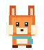
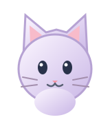

01 / DO MORE
c.
YOU SAIDOpen Calculator
↗ Launching Calculator
Say it. Don't dig for it.
Open supported apps, find folders, search the web, and handle simple Windows controls.
Meet Companio. A desktop sidekick that opens apps, finds things, and handles the little stuff—without getting in your way.
Interactive illustration · Doesn't operate your computer
Some things shouldn't take six clicks and three windows.
Companio brings a little bit of helpfulness right to your desktop. Just ask. Get things moving. Then carry on.
See the simple ideaOpen supported apps, find folders, search the web, and handle simple Windows controls.
Pick a companion, give it a place on your desktop, and let the small interactions make it yours.
Summon with a shortcut, send it to sleep, or hide it without closing your workflow.
A little different from the usual assistant. Find the one that feels right at home on your desktop.
Bright-eyed and ready.

Made of good pixels.
100% squishable energy.
Calm, soft, easygoing.

Always looking around.
Just a little treat.
Simplified illustrations of the six companion styles available in the desktop app.
Use the global shortcut or click your character to open the command bar.
Type a request or use supported speech recognition. Review commands before they run.
Companio attempts your request, gives you feedback, and gets out of the way.
Built-in commands run locally. Optional Ollama / LM Studio integration adds experimental local conversations and reviewed actions.
Companio is an open-source Windows desktop project. Try the preview, choose your character, and make your desktop a little more personal.
Preview v1.1.0-rc.22: Choose ARM64 for Snapdragon/Windows on ARM laptops or x64 for Intel/AMD PCs. The buttons download the installers directly—no ZIP or GitHub sign-in needed. Review the release notes and SHA-256 checksums. This is an unsigned preview, not a production-certified application; Windows may show a publisher warning. Other versions remain available.